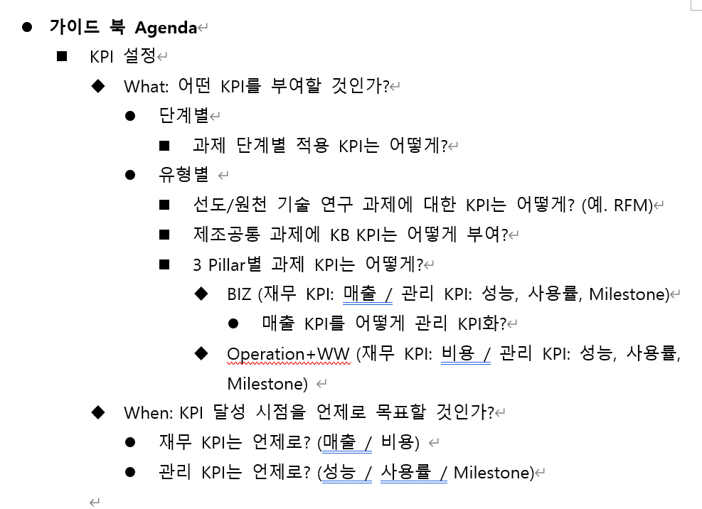
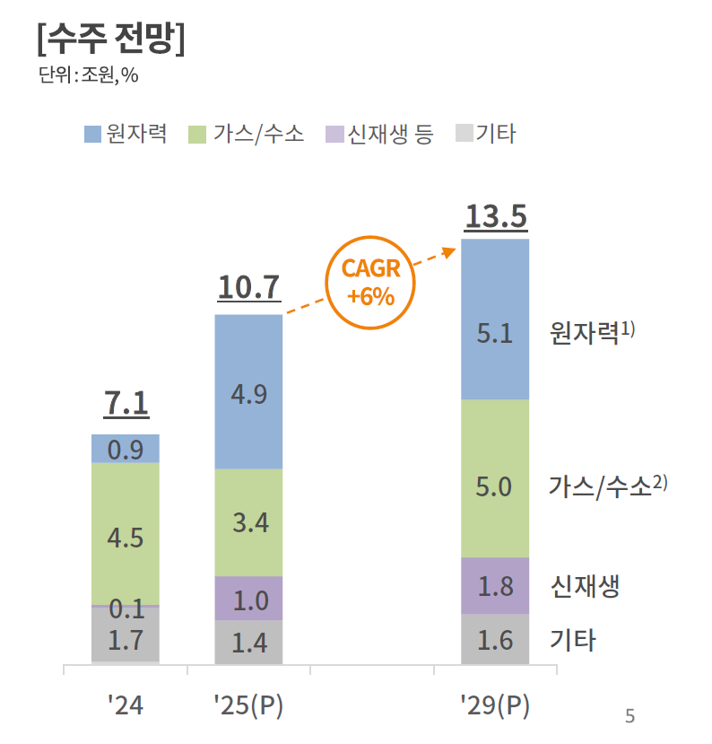

해당 자료는 상품기획팀 신선MD의 1분기 핵심 업무 계획을 정리한 내용입니다. 주요 과제는 상품 유형의 분류 기준을 개선하고, 상품별 성과를 측정할 품질지표 및 관리 체계를 새롭게 정의하는 것입니다. 또한, 레시피북 표준화를 통해 전국으로 사업을 확대하고, 이에 필요한 공급망 관리(SCM) 과제와 조직을 구체화하는 계획도 포함하고 있습니다. 이러한 모든 과정은 본사와 매장 간의 품평회 및 긴밀한 합의를 통해 진행될 예정입니다.
| 상품상품기획팀 신선MD유통채널 관련 1Q 주요 To-do List 정리 | ||||||||||||||||||||||
|---|---|---|---|---|---|---|---|---|---|---|---|---|---|---|---|---|---|---|---|---|---|---|
| JAN | FEB | MAR | ||||||||||||||||||||
| W1 | W2 | W3 | W4 | W1 | W2 | W3 | W4 | W1 | W2 | W3 | W4 | |||||||||||
| 1. 상품 유형 분류 (AOP/LRP 연계+Rebaseline) | ||||||||||||||||||||||
| 1-1. 상품 분류 기준 품질개선/공유용 자료 작성 | ||||||||||||||||||||||
| 1) 분류 기준 품질개선 - 매장 공유 가능 수준 | ||||||||||||||||||||||
| - 프리미엄,2 vs PB상품: 주력 영업전략과의 연계성 여부의 판단 기준은? | ||||||||||||||||||||||
| - 프리미엄 vs 일반: 프로세스 리뉴얼 여부의 판단 기준은? | ||||||||||||||||||||||
| 2) 분류 원칙 수립 - 필요 여부 확인 필요 | ||||||||||||||||||||||
| - 프리미엄, 2, 3 비중 정의? | ||||||||||||||||||||||
| - 이외 방안 고민 필요 | ||||||||||||||||||||||
| 3) 공유 Material 작성 / 품질개선 | ||||||||||||||||||||||
| 1-2. 기존 상품 재정의 공유용 자료 작성 | ||||||||||||||||||||||
| 1) 재정의 가이드라인 - 매장 공유 가능 수준 | ||||||||||||||||||||||
| - 어떻게 프레시푸드그룹핑/통합하면 되는 것인지? | ||||||||||||||||||||||
| - 어떻게 의미 재해석하면 되는 것인지? | ||||||||||||||||||||||
| 2) 공유 Material 작성 / 품질개선 | ||||||||||||||||||||||
| 1-3. 카테고리 특화/생산 공통/매장관리 공통 분류 가이드 작성 | ||||||||||||||||||||||
| 1) 카테고리 특화 기준 | ||||||||||||||||||||||
| 2) 생산 공통 기준 | ||||||||||||||||||||||
| 3) 매장관리 공통 기준 | ||||||||||||||||||||||
| - 가맹점 매장관리 공통은 상품 없애라 가이드라인? | ||||||||||||||||||||||
| 1-4. 가이드 매장 전달 및 수합 | ||||||||||||||||||||||
| 1) 가이드 전달 및 설명 | ||||||||||||||||||||||
| 2) 매장 분류, 재정의 수행 | ||||||||||||||||||||||
| 3) 결과 취합 | ||||||||||||||||||||||
| 1-5. 매장-본사 품평회 및 최종안 도출 | ||||||||||||||||||||||
| 1) 본사-매장 품평회 | ||||||||||||||||||||||
| 2) 최종안 도출 | ||||||||||||||||||||||
| 1-6. SCM to do list 정의 | ||||||||||||||||||||||
| 1) 분류 작업 관련 SCM To-do list 정리 | ||||||||||||||||||||||
| 2. 상품별 품질지표 설정/관리 체계 정의 | ||||||||||||||||||||||
| 2-1. 품질지표 관리 한판 정의 | ||||||||||||||||||||||
| 1) 상품 단계별 품질지표 List 정의 | ||||||||||||||||||||||
| - 상품 단계 정의 필요: 상품기획 / 시식테스트&시범판매 / 상품개발 / 매장적용 / 품질개선 | ||||||||||||||||||||||
| - 품질지표 List 정의: 출시일정, 조리기술 퍼포먼스, 재무 성과, 사용자 만족도 | ||||||||||||||||||||||
| - 원천 조리기술 R&D(에. RFM, Physical 식품) 상품에 대한 품질지표 설정 수준은? | ||||||||||||||||||||||
| - 생산공통 상품에 대한 레시피북 품질지표 부여 방식은? | ||||||||||||||||||||||
| 2) 상품 Pillar별 품질지표 항목 정의 | ||||||||||||||||||||||
| - Biz: 매출 (단, 제품 경쟁력/품질 등은 어떻게 반영?) | ||||||||||||||||||||||
| - Ops/WW: 비용 or 인력 (단, 인력로 쏠림 현상 예상되는데 어떻게 방지?) | ||||||||||||||||||||||
| 2-2. 품질지표 관리 체계 정의 | ||||||||||||||||||||||
| 1) 상품별 관리 수준 정의 | ||||||||||||||||||||||
| - 본사 관리 빈도 | ||||||||||||||||||||||
| - 본사 관리 항목… | ||||||||||||||||||||||
| - 본사 참여 수준… | ||||||||||||||||||||||
| 2-3. 매장 상품별 본사 관리 품질지표 정의/합의 | ||||||||||||||||||||||
| 1) 매장 1차안 도출 (항목 Level) | ||||||||||||||||||||||
| 2) 본사-매장 품평회 및 합의 | ||||||||||||||||||||||
| 3) 매장 타깃치 도출 | ||||||||||||||||||||||
| 4) 본사-매장 타깃치 품평회 및 합의 | ||||||||||||||||||||||
| 2-4. 품질지표 → 매장목표 연결 가이드라인 전달? | ||||||||||||||||||||||
| 1) HR 조직에 식품 품질지표 to 매장목표 연결 가이드라인 수립/전달 | ||||||||||||||||||||||
| 2-5. SCM to do list 정의 | ||||||||||||||||||||||
| 1) 품질지표 작업 관련 SCM To-do list 정리 | ||||||||||||||||||||||
| 3. 전국확대 | ||||||||||||||||||||||
| 3-1. 생산 공통 전국확대 레시피북 정립 | ||||||||||||||||||||||
| 1) 레시피북 관리 항목/요소 정의 | ||||||||||||||||||||||
| 2) 레시피북 관리 템플릿 정의 | ||||||||||||||||||||||
| 3) 기구축 상품 레시피북 Asset화 | ||||||||||||||||||||||
| - 에너빌 식품 Portal과의 연계는? | ||||||||||||||||||||||
| - 기존 상품개발/매장적용 상품는 어떻게? | ||||||||||||||||||||||
| 4) 레시피북 Asset 매장운영 방식 정의 | ||||||||||||||||||||||
| - 접근권한 설정 등등 | ||||||||||||||||||||||
| 3-2. 매장관리 공통 전국확대 | ||||||||||||||||||||||
| 1) 재무 - 교통정리 필요 | ||||||||||||||||||||||
| 3-3. SCM todo list 정리 | ||||||||||||||||||||||
| 1) 전국확대 관련 SCM To-do list 정리 | ||||||||||||||||||||||
| 4. SCM | ||||||||||||||||||||||
| 4-1. 이외, SCM to do 이니셔티브/list 정리 | ||||||||||||||||||||||
| 1) 조리기술 전문성 선제 확보 | ||||||||||||||||||||||
| 2) 식품 물류시설 표준 | ||||||||||||||||||||||
| 3) 조직/인력 보완 | ||||||||||||||||||||||
| 4) 위생규정/식품안전법 revisit(위생관리) | ||||||||||||||||||||||
| 5) 직원교육 | ||||||||||||||||||||||
| 6) 이외 | ||||||||||||||||||||||
| 4-2. SCM 분과/TF 정의 | ||||||||||||||||||||||
| 1) 각 업무별 빈도 (일회성 업무/특정 시점 업무/상시 업무) 구분 | ||||||||||||||||||||||
| 2) 업무별 필요 참여자 (의사결정자, 현업) 수준 정의 | ||||||||||||||||||||||
| 3) 업무 빈도 & 필요 참여자 기준 분과 & TF 정의 | ||||||||||||||||||||||
| 4-3. SCM 주요 마일스톤 정의 | ||||||||||||||||||||||
| 1) 논의 시점, 아젠다 세팅 | ||||||||||||||||||||||
| - 두산 주요 Business Calender와 연결 필요 |
해당 자료는 신규 상품의 기획부터 매장 적용까지 전 과정에 걸친 KPI 운영 방안과 이슈를 다루고 있습니다. 선도/원천 기술 상품은 R&D 실적 중심으로 관리하고, 일반 상품은 기획, 시식, 개발 각 단계마다 마진율, 비용, 일정 등의 목표를 점검 리스트를 통해 체계적으로 관리할 것을 제안합니다. 이는 상품의 사업성을 단계별로 검증하여 재무 목표와의 연계를 강화하기 위함이며, 매출 기여도 산정의 어려움과 같은 추가 고민점도 함께 제시하고 있습니다.

이 이미지는 신규 상품 개발을 위한 KPI 설정 가이드북의 아젠다를 보여줍니다. 아젠다는 크게 '어떤 KPI를 부여할 것인가(What)'와 'KPI 달성 시점을 언제로 할 것인가(When)'라는 두 가지 핵심 질문으로 구성되어 있습니다. 특히 'What' 부분에서는 프로젝트를 단계별, 유형별(선도 기술, BIZ, Operation 등)로 세분화하여, 각 특성에 맞는 재무 KPI(매출, 비용)와 관리 KPI(성능, 사용률, Milestone) 설정 방안을 구체적으로 논의하고 있습니다. 이를 통해 상품 기획부터 출시까지 전 과정에 걸쳐 사업 목표와 연계된 성과를 체계적으로 관리하려는 의도를 파악할 수 있습니다.
| 카테고리 | 매장운영 예상 Issue | 아이디어 (what - 품질지표) | 아이디어 (How - 품질점검) | 추가 고민 필요 Point | 컨설팅사 요청 | ||||
|---|---|---|---|---|---|---|---|---|---|
| 품질지표 | 선도/원천 조리기술 상품 품질지표 수립/관리 가이드 | 선도/원천 조리기술 [What] 선도/원천 조리기술 상품에 어떠한 본사 관리 품질지표를 매장적용할 것인가? [How] 관리 빈도 / 매장협력 수준은 어느정도로 할 것인가? | 출시일정 및 R&D 실적 관련 품질지표 관리 - R&D 상품개발 주요 출시일정을 초기에 설정하고, 시점별 달성 여부 관리 - 특허, 논문, 시제품 등 정성적인 R&D성과 달성 여부로 관리 | 연 2회 관리를 기본으로 하나, 조리기술 분과 차원 관리 중요도 높게 판단될 때 빈도/매장협력 증대 - 기본: 프레시푸드그룹 주요 보고때 기준으로만 연 2회 진행상황 점검 수준 관리 - 시장/조리기술 상황의 변동으로 인해 중요 관리 필요할 시, 조리기술 분과 판단으로 품질점검 빈도/매장협력 증대 | - R&D조직에서 품질지표를 어떤 Skim으로 설정하고 관리하는지 - 선도/원천 조리기술 상품의 사업화 Grace Period는 어느정도로 할 것인가? | 선도 원천조리기술 품질지표 항목 구성 / 품질점검 벤치마킹 | |||
| 상품기획~매장적용 상품 단계별 품질지표 수립/관리 가이드 | Overall (How는 상품개발/매장적용 이후) - [What-매출] 매장가 상품별 성과 품질지표와 매출 Goal 연결을 어떻게 가지게 할 것인가? - [How-매출] 매장의 상품별 매출 Goal 달성 여부를 어떻게 Tracking 할 것인가? - [What-비용] 매장가 성과 품질지표와 비용 Goal 연결을 어떻게 가지게 할 것인가? - [How-비용] 매장의 상품별 비용 Goal 달성 여부를 어떻게 Tracking 할 것인가? | [매출] TBD - XX [비용] 비용절감 유관 성과 품질지표를 활용률 판매동인 포함해 구성 - (비용 절감 성격 성과 품질지표) 그대로 매장적용하되 사용률/매장적용률 Tracking할 수 있도록 판매동인 구성 (예. 유지보수비 절감률, 생산비 절감률, 에너지비 절감률, 물류비 절감률) - (MM 절감 성격 성격 성과 품질지표) MM(사용률 매장적용률 Tracking할 수 있도록) * 해당 업무 평균 인건비 - (기타 성과 품질지표) 사고 감소, 불량률 감소 건수 * 건당 손실 비용 | 활용률 중심 품질점검 - 성과 품질지표와 함께 판매동인로 구성된 활용율 중심으로 품질점검 - 목표 활용률 대비 실제 활용률의 수준 차이를 통해 품질지표 / 재무 타깃 달성 품질점검 | - 쿠션을 먹으면 식품 상품 기대효과 Sum이 전체 매출/비용을 초과하는 경우가 발생 가능성 - 매출 재무목표에 연동 어떻게 하는지? 매출은 시장 상황에 따라 변동 여지 크고, 또한 두산이 식품 Product를 직접 판매하는 것이 아니기 때문에 기여도로 봐야할 것 같은데, 계산 어려움 | 매출 관련 품질지표 판매동인 구성 방법 / | ||||
| 상품기획 단계 - [What] 상품기획 단계에 어떠한 본사 관리 품질지표를 매장적용할 것인가? - [How] 관리 빈도 / 매장협력 수준은 어느 정도로 할 것인가? | 마진율 관점 상품기획 점검list 관리 - 예상 효과/품질지표 도출 여부 확인 (O/X) > 시식테스트 Goal (시식테스트 업체 제안 활용) > 최종 관리/재무 차원 판매목표 - 예상 비용 도출 여부 확인 (O/X) > 시식테스트 견적 비용 (시식테스트 업체 제안 활용) > 상품개발/매장적용 완료시 투자 및 매장운영 비용 - 예상 시식테스트/상품개발 일정 도출 여부 확인 (O/X) > 시식테스트 주요 출시일정 (시식테스트 업체 제안 활용) - 상기 내용 시식테스트 시작전 보완 계획 여부 확인 (O/X) > 시식테스트 시작전 수령 필요 - 상기 내용 본사 제출 여부 확인 (O/X) | 시식테스트 Switch On 직전 자료 수령/데이터화 수준 - (빈도) 시식테스트 실행 직전 1회 + 프레시푸드그룹 주요 보고 직전 > 시식테스트 실행전 본사 업데이트 (미완료하고 진행하겠다는 건 경고) > 프레시푸드그룹 주요 보고때는, 점검 list 미완료 건에 대해서는 주의(진행중), 경고(누락-미달성) 처리 - (매장협력) 서면 수령후 데이터화 관리 > 마진율 관점 분석 내용 수령 > 시식테스트 및 상품개발 일정 수령 > 검수는 매장 SCM 조직 역할 | - 외부 업체를 끼지 않고, 시식테스트 하는 경우는? - 상품개발/매장적용 완료시 투자 및 매장운영 비용을 이 단계에서 하는 것이 맞나? (없어도 되는 것이 맞나?) - 보고 관점에서 신호등으로 어떻게 말아올리지? - 기도출 상품기획 상품중, 점검list 미비한 상품는 Stop? 품질지표 달성 못했다 수준으로 처리하고, 시식테스트로 넘기는것은 알아서? - 에너빌은 상품기획 단계 성과 품질지표 + 상품개발 품질지표 관리 (단, 에너빌은 별도 시식테스트 단계를 상정하지 않아, 우리기준으로 상품개발 품질지표는 시식테스트에 다루는 것이 맞아 보임) | ||||||
| 시식테스트 단계 - [What] POC 단계에 어떠한 품질지표를 매장적용할 것인가? - [How] 관리 빈도 / 매장협력 수준은 어느 정도로 할 것인가? | 시식테스트 완결성 및 마진율 관점 업데이트 내용 점검list 관리 [시식테스트 진행중] - 주요 출시일정 달성 여부 (O/X) > 상품기획 단계에서 제출한 출시일정별 조리기술 목표 달성 여부 [시식테스트 최종 결과 보고 시점] - Goal 달성 여부 (O/X) > 최종 출시일정상 조리기술 품질지표 달성 여부 (시식테스트 업체 제안 활용) - 본 상품 확장시, 예상 마진율 도출 여부 (O/X) > Updated 최종 관리/재무 차원 기대효과 판매목표 (시식테스트 업체 제안 활용) > Updated 최종 예상 비용 산정 (시식테스트 업체 제안 활용) - 상기 내용 본 상품 시작전 보완 계획 여부 확인 (O/X) - 상기 내용 본사 제출 여부 확인 (O/X) | 시식테스트 최종 결과 보고 시점 자료 수령/데이터화 수준 - (빈도) 시식테스트 최종 결과 보고 시점 1회 + 프레시푸드그룹 주요 보고 직전 > 본상품개발 실행전 본사 업데이트 (품질지표 미완료하고 진행 의사 표현은 경고) > 프레시푸드그룹 주요 보고때는 하기와 같이 처리 -> 시식테스트 진행중: 출시일정 뒤쳐지면 주의 -> 최종 결과 보고: 점검 list 미완료 건에 대해 주의(진행중/품질개선), 경고(누락-미달성) 처리 - (매장협력) 서면 수령후 DB 관리 > 시식테스트 결과 보고서 수령 > 마진율 관점 분석 내용 수령 | - 시식테스트 출시일정별로 조리기술 품질지표를 달성 여부를 체크하는게 맞나? 아니면 출시일정 진행 여부만 체크하는 것이 맞을지? - 시식테스트의 Goal 달성 여부를 체크하는 것이 맞나? 실험적 시도를 제한하는 것이 아닐지. 차라리 본 상품 확장시의 마진율 관련된 부분을 본사 관리하는게 맞는게 아닐지? | ||||||
| 초기 상품개발 단계 - [What] 상품개발 단계에 어떠한 품질지표를 매장적용할 것인가? - [How] 상품개발 빈도 / 매장협력 수준은 어느 정도로 할 것인가? | 조리기술 목표 달성 위한 진척도 관리 - 출시일정별 조리기술 목표/ 달성 여부 (O/X or %) > 본 상품 업체 제안 내용 활용 (작업 계획서, 기대효과 및 비용 견적 등) > 조리기술 목표는 사업 품질지표 확산 매장적용전 단일 Line, 부서 등 제한된 범위내에서 사업 품질지표 실증 여부로 판단 | 격월 정기 관리 + 일부 중요상품 집중 관리 - (빈도) 정기적으로 격월 + 본격 현장 이전 1회 > 프레시푸드그룹 주요 보고에서는 최고 인접한 시점의 출시일정상 성능 달성 수준에 따라 처리 > 현장 매장적용전 본사 최종 업데이트 > 중요 상품에 대해서는 빈도 월간로 축소 - (매장협력) 서면 수령후 DB 관리 + 중요 상품에 대해서는 상품개발 출시일정 참여 > 상품개발 결과 보고서 수령, 목표 달성 수준 관리 > 중요 상품에 대해서는 상품개발 주요 출시일정에 참여 및 의견 제시 | |||||||
| [매장적용/확장 단계] - [What] 매장적용/확장 단계에 어떠한 품질지표를 매장적용할 것인가? - [How] 관리 빈도 / 매장협력 수준은 어느 정도로 할 것인가? | 사업 성과/재무 목표 달성 수준 관리 - 사업 품질지표 달 성 수준은 성능과 확산 수준으로 나눠 달성 관리 여부 평가 (O/X or %) > 사업 품질지표 달성 수준 (목표 성능 수준) > 확산 달성 수준 - 재무 목표 달성 수준은 외부 환경 변화를 제거하고, 성능과 확산 달성 수준을 통해 이론적 평가 > 예. 사업 품질지표 (성능 * 확산) * 외부 환경 요인에서 외부 환경 요인을 고정값으로 두고, 성능 확산 지표의 달성률 수준만 가지고 재무 목표 달성 수준평가 | 월간 정기 관리 + 일부 중요상품 집중 관리 - (빈도) 월간 품질점검 - (매장협력) 목표 성능, 확산 달성 수준 여부 평가 + 이에 기반한 이론적 재무 목표 달성 수준 품질점검 > 중요 상품에 대해서는 본사 인력이 매장적용 단계에 투입 Bottlenck 파악 및 필요 지원 사항 등 파악 | - 매장적용/확장 단계에서 품질지표 달성 시점은 어떻게 매장적용할 것인가? |
해당 문서는 프레시푸드 신상품의 성공적인 출시와 판매 활성화를 위한 8대 영업전략 추진 계획입니다. 주요 내용으로는 SCM 운영 체계를 확립하고 품질 지표 및 위생 규정을 수립하여 안정적인 사업 기반을 구축하는 것을 포함합니다. 또한 스마트 키친 도입 등 선제적 R&D와 그룹 공통 상품 개발을 통해 상품 경쟁력을 강화하고, 전문 인력 체계화 및 직원 교육, 조리 경연대회 등을 통해 식품 중심의 조직 문화를 확산시키고자 합니다.
| (Summary) 프레시푸드 8대 신상품 영업전략 추진 계획 | ||||||||||||||
|---|---|---|---|---|---|---|---|---|---|---|---|---|---|---|
| 신상품 영업전략 | 주관 부서 | 지원 부서 | 1Q | 2Q | 3Q | 4Q | 비고 | |||||||
| 0 | SCM 매장운영 | ③-1 SCM set-up | 신선식품센터 | 1Q 내 조직 매장운영안 확정 후 가맹점 커뮤니케이션 완료 | ||||||||||
| ③-2. SCM 매장운영 | ||||||||||||||
| 1 | 연간/장기판매계획 연계 | ① 기존 상품 재분류 | 신선식품센터 | 물류팀 | 상품분류기준/품질지표안 수립 후 가맹점 커뮤니케이션 | |||||||||
| 1-2. | O | 신규 식품 영업전략 상품 수립 | 신선식품센터 | 물류팀 | ||||||||||
| 2 | 선제적 조리기술 R&D | 2-1. | 스마트키친시스템 | 신선식품센터 | 초기 시범판매 | (델리코너 협의 중) | ||||||||
| 2-2. | O | Central 원재료시스템 | 신선식품센터 | 베타상품 서비스 런칭 | (상세 상품기획 중) | |||||||||
| 2-3. | 식품-ready Data 체계 정립 | 품질관리센터 | 신선식품센터 | (DE센터 검토 중) | ||||||||||
| 3 | 프레시푸드그룹 공통 상품 추진 | 3-1. | 지식 공유 Network 구축 | 신선식품센터 | ||||||||||
| △ | 1) Knowledge Sharing 품평회 | 실무 품평회 | 식품 Day 품평회 | 1,2H 품평회 이후 실무 품평회 추진 | ||||||||||
| △ | 2) Knowledge Bank 체계 구축 | 식품 레시피북 구축 안 수립 | ||||||||||||
| 3-2. | O | 프레시푸드그룹 공통 상품 추진 (1차 매장인력영역) | 인사팀 | 신선식품센터 | 1차 프로세스개선 완료 | 재무 공통상품 관련 추진 논의 필요 | ||||||||
| 4 | 식품 물류시설 구축 | 4-1. | O | ④ 프레시푸드그룹 식품 유통채널 위생규정 수립 | 신선식품센터 | 공통 레시피 배포 예산지원 관련 논의 필요 | ||||||||
| 5 | 조직/전문성 보완 | 5-1. | O | 가맹점 FX 인력 지원 | 신선식품센터 | 냉동식품QC | 수요기반로, 리소스 따라 판단 | |||||||
| 5-2. | O | 프레시푸드그룹 식품 매장운영 인력 체계화 (식품R&D소) | 신선식품센터 | 물류팀 | 프레시푸드그룹 차원의 전문성 진단 필요 - 추진 방안 논의 필요 | |||||||||
| 5-3. | 협력업체풀 관리 | 신선식품센터 | (추진 방안 구체화 필요) | |||||||||||
| 6 | 위생규정/식품안전법 Revisit | 6-1. | 프레시푸드그룹 식품 위생관리 위생규정 수립/배포 | 품질관리센터 | - 위생관리 및 일부 거버넌스 프로젝트 예정 - 프로젝트 外 범위는 SCM 협의체 매장운영 | |||||||||
| 7 | 품질지표 수립 / 매장목표 연계 | 7-1. | O | ② 품질지표 체계 구축 및 매장 공유 | 신선식품센터 | |||||||||
| 7-2. | O | 품질지표-매장목표 연동 방안 수립 | 신선식품센터 | 물류팀, 인사팀 | 1월내 가이드 수립 후 배포 필요 | |||||||||
| 7-3. | O | 품질지표 모니터링 및 매장운영지원 | 신선식품센터 | |||||||||||
| 8 | 식품 일하는 문화 확산 | 8-1. | 임직원 직원교육 체계 수립/실행 | 신선식품센터 | 인사팀 | 점장단 | 매장관리자 | |||||||
| O | 1) 점장단 직원교육 | 신선식품센터 | 점장단 | |||||||||||
| O | 2) 실무임원 직원교육 | 신선식품센터 | ||||||||||||
| 8-2. | 비정기 이벤트 진행 | 신선식품센터 | 인사팀, 마케팅팀 | 조리경연대회 | 식품 Day | |||||||||
| 2) 식품 조리경연대회 | 신선식품센터 | 인사팀 | ||||||||||||
| 2) Tech/식품 Day | 신선식품센터 | 마케팅팀 |
해당 문서는 가맹점 상품을 브랜드 연계성 및 식품 도입 수준 등을 기준으로 '프리미엄(신선식품)', '일반(가공식품)', 'PB상품(즉석식품)'의 세 가지 유형으로 재분류하는 방안을 제시합니다. 분류 유형에 따라 프리미엄 상품은 본사의 밀착 지원 및 관리를 받고, 일반 상품은 모니터링 대상이 되며, PB상품은 매장이 자체적으로 관리하게 됩니다. 이와 같은 분류는 상품의 중요도에 따라 본사의 관리 수준을 차등화하여 체계적인 지원 및 모니터링 체계를 구축하는 것을 목표로 합니다.
| 1. 상품 분류 | |||
|---|---|---|---|
| 가맹점 상품를 브랜드 연계성 및 식품 목표 수준에 따라 3개 유형으로 분류 |

해당 이미지는 제시된 문서의 내용과 직접적인 관련이 없는, 에너지원별 수주 전망을 나타내는 막대그래프입니다. 그래프에 따르면 전체 수주 규모는 2024년 7.1조 원에서 2029년 13.5조 원으로 연평균 6%(CAGR) 성장할 것으로 예측됩니다. 부문별로 살펴보면, 원자력 부문의 수주액이 2024년 0.9조 원에서 2029년 5.1조 원으로 가장 큰 폭으로 성장할 전망입니다. 같은 기간 가스/수소 및 신재생 부문 역시 각각 5.0조 원, 1.8조 원으로 꾸준한 증가세를 보일 것으로 예상됩니다.
| 가맹점 커뮤니케이션 위해 상품 재분류의 판단 기준을 구체화 | |||||||||||||||||||
|---|---|---|---|---|---|---|---|---|---|---|---|---|---|---|---|---|---|---|---|
| 브랜드 연계성 | 식품 도입 수준 | 본사 관리 방안 | |||||||||||||||||
| 브랜드 연계성 | 본사 관리 방안 | ||||||||||||||||||
| 브랜드 연계성 | 식품 업무 혁신 수준 | and | 재무 매출효과 수준 | or | 주력 경쟁력 확보 여부 | 본사 관리 방안 | |||||||||||||
| SCM와 협의된, 연간/장기판매계획 와 연계된 식품 상품인가? | 식품 중심으로 프로세스가 리뉴얼 되는가? | 매출 또는 비용으로 환산하였을 때 매출효과가 큰가? | 중장기적으로 회사의 '주력 경쟁력' 확보를 위한 상품인가? | 본사 관리 방안 | |||||||||||||||
| 프리미엄 | 신선식품 | YES | YES 사업 영업전략과 align 되어 있으며, 식품 업무 혁신을 수반하는 상품 (+ 高 매출효과) | YES 매장 '주력 경쟁력' 확보 상품 (품질/조리기술 관점) | 본사 모니터링 . 진척도 및 품질지표 달성 여부 모니터링 . 이슈 tracking | 프레시푸드그룹 중점 상품 대상 밀착 지원/관리 . Center 조리기술 지원 | 사업의 본질, 메뉴구성 변화 | ||||||||||||
| 본사 모니터링 . 진척도 및 품질지표 달성 여부 모니터링 . 이슈 tracking | |||||||||||||||||||
| 일반 | 가공식품 | YES | NO 브랜드 연계성이 높으나, 단위 업무를 개선하는 수준의 상품 (or 프레시푸드그룹 차원의 전국확대 가능한 상품) | YES 사업 목표 달성을 위해 반드시 수행해야 하는 상품 (위생규정, 식품안전법 등) | 본사 모니터링 . 진척도 및 품질지표 달성 여부 모니터링 . 이슈 tracking | ||||||||||||||
| 일반 | 가공식품 | YES | NO 브랜드 연계성이 높으나, 단위 업무를 개선하는 수준의 상품 (or 프레시푸드그룹 차원의 전국확대 가능한 상품) | YES 사업 목표 달성을 위해 반드시 수행해야 하는 상품 (위생규정, 식품안전법 등) | 본사 모니터링 . 진척도 및 품질지표 달성 여부 모니터링 . 이슈 tracking | ||||||||||||||
| 일반 | 가공식품 | YES | NO 브랜드 연계성이 높으나, 단위 업무를 개선하는 수준의 상품 (or 프레시푸드그룹 차원의 전국확대 가능한 상품) | YES 사업 목표 달성을 위해 반드시 수행해야 하는 상품 (위생규정, 식품안전법 등) | 본사 모니터링 . 진척도 및 품질지표 달성 여부 모니터링 . 이슈 tracking | ||||||||||||||
| PB상품 | 즉석식품 | NO | n/a 재무적 매출효과 산정이 불가능하거나, 조리설비성 상품도 즉석식품 유형에 포함 (원재료확보, 특정 조리기술 공동 상품개발 등) | 매장 자체 관리 | |||||||||||||||
| PB상품 | 즉석식품 | NO | n/a 재무적 매출효과 산정이 불가능하거나, 조리설비성 상품도 즉석식품 유형에 포함 (원재료확보, 특정 조리기술 공동 상품개발 등) | 매장 자체 관리 | |||||||||||||||
| PB상품 | 즉석식품 | NO | n/a 재무적 매출효과 산정이 불가능하거나, 조리설비성 상품도 즉석식품 유형에 포함 (원재료확보, 특정 조리기술 공동 상품개발 등) | 매장 자체 관리 | |||||||||||||||
| (백업) 상세 설명 | |||||||||||||||||||
| Description | 비고 | ||||||||||||||||||
| 1) 브랜드 연계성 | [브랜드 연계성 기준] | ||||||||||||||||||
| - 본사에 보고된 연간/장기판매계획 List 중 SCM-매장 간 '주력 영업전략 Theme을 최대 2개 선정'하여 브랜드 연계성 구분에 활용 | |||||||||||||||||||
| 2) 식품 도입 수준 (예상 매출효과) | [식품 업무 혁신 / 재무 매출효과] | ||||||||||||||||||
| 2) 식품 도입 수준 (예상 매출효과) | - 재무/정량 매출효과 산출 지표 기준: 매출, 비용, 품질 지표 | ||||||||||||||||||
| [주력 경쟁력 확보] | |||||||||||||||||||
| - 매장에서 선정하되, '주력 경쟁력'을 위한 상품임을 백업하는 자료를 제공하고 SCM와 협의 필요 | |||||||||||||||||||
| - 품질/조리기술력 확보 관련 상품를 우선시 하며, 신선식품 유형 상품로 협의되지 않는 상품는 가공식품 유형으로 분류 | 예시) 시장 및 경쟁사 동향 등 | ||||||||||||||||||
| - 경쟁력 확보를 위해 충족해야하는 위생규정/식품안전법 관련 상품는 가공식품 유형으로 분류 | |||||||||||||||||||
| 관리 방향성 | [Overall] | ||||||||||||||||||
| - 관리 유형 및 주기: 신선식품 & 가공식품 상품에 대한 품질지표 Progress 를 격월로 본사(신선식품센터)에 서면 보고 (신호등 Tracking) | 본사에서 양식 제공 필요 | ||||||||||||||||||
| - 대표이사 격월 보고 상품 | |||||||||||||||||||
| > 신선식품 상품 중 '중점 관리 상품' + 신선식품/가공식품 유형 상품 중, 진행 사항에서 경고표시인 상품 | 신선식품 내 중점 관리 상품 기준 논의 및 매장 협의 | ||||||||||||||||||
| 기타 | 1. 전국확대 가능한 상품 대다수가 PB상품 일 것으로 예상되는데 본사차원에서 어떻게 관리하고 전파할 것인지? | ||||||||||||||||||
| 기타 | - [생산업 특화 전국확대 상품] 정기 협의체에서 benchmarking | 구매, 생산, 영업 등 | |||||||||||||||||
| 기타 | - 백오피스 전국확대 상품는 본사에서 도출하여 진행 | HR, 재무 등 | |||||||||||||||||
| 기타 | |||||||||||||||||||
| 기타 | 2. 조리설비 성 성격의 상품들은 과거 기타로 분류하였었는데, 즉석식품로 분류하여 매장 자체 관리로 맡기는게 어떤지 | ||||||||||||||||||
| 기타 | |||||||||||||||||||
| 기타 | 3. 산학상품/식품 Day 상품 관리 | ||||||||||||||||||
| 기타 | - 각 매장 식품 영업전략상품에 포함하여 관리 (2026년도 신규 상품부터 포함) | ||||||||||||||||||
| 기타 |
본사는 주력 영업 전략 및 재무 목표와 연계된 핵심 상품의 실행력을 강화하기 위해 품질 지표(KPI) 운영안을 도입합니다. 이를 위해 '출시일정', '품질', '활용', '재무'라는 4대 식품 품질 지표를 정의하여 성과를 객관적으로 측정하고 관리합니다. 본사는 상품 기획부터 매장 운영까지 단계별로 이 지표들을 모니터링하며, 특히 상품 출시 후 1년간은 활용도와 재무 목표 달성도를 집중적으로 관리하여 성과를 가시화할 계획입니다.
| 2. 품질지표 매장운영안 | |||||||||||||
|---|---|---|---|---|---|---|---|---|---|---|---|---|---|
| (슬라이드 1) 왜 본사에서 품질지표 관리? | |||||||||||||
| 주력 영업전략과 연계되고, 재무적 목표를 가진 상품를 시기별 적절할 지표로 관리해 실행령 강화에 기여 | |||||||||||||
| - 박지원 프레시푸드그룹 대표이사 말씀 | |||||||||||||
| > “FX를 성공적으로 달성하려면 성과를 객관적으로 측정할 수 있는 계량화된 품질지표가 필요하다" (25.12.19 하반기 프레시푸드그룹 식품 영업전략 워크숍) | |||||||||||||
| > “신상품 도입의 궁극적 목표는 생산성 향상과 고객을 위한 부가가치 창출에 있으며, 성과는 정량적이고 구체적인 품질지표를 통해 명확하게 측정하고 가시화해야 한다” (25.12.04 테크&식품 데이) | |||||||||||||
| > “신상품 도입은 변화관리가 필수적이며, 저항을 극복하려면 명확한 품질지표와 탑다운 방식의 지속적인 추진이 필요하다” (25.08.22 Executive 식품 Deep-dive Program) | |||||||||||||
| - 본사 관리 방향성 | |||||||||||||
| > 대상: 신선식품 / 가공식품 상품 즉, 주력 영업전략과 연계되고, 재무적 목표를 가진 상품 | |||||||||||||
| > 사업 성과와 연결되는 이러한 상품는 본사에서도 진행 상황을 모니터링하며, 실행력 강화에 기여 목적 | |||||||||||||
| 매장 식품 상품 성과 달성 여부 및 변화 관리 수준을 모니터링 하기 위한 4대 식품품질지표를 정의 | |||||||||||||
| ① 출시일정 | 프로젝트 일정을 준수하였는가? - 계획 대비 진척도 및 완료 여부 | ||||||||||||
| ② 품질 품질지표 | 조리레시피(레시피)의 품질이 우수한가? - 목표 품질 대비 실제 구현 수준 | ||||||||||||
| ③ 활용 품질지표 | 상품개발된 레시피를 실제로 사용하고 있는가? - 사용/매장적용 범위 확산 수준 | ||||||||||||
| ④ 재무 품질지표 | 목표한 재무 목표를 달성하였는가? - 상정한 매출/비용 목표 달성 수준 | ||||||||||||
| 4대 식품품질지표: 상품의 FX 단계에 따라 관리 points 상이 | |||||||||||||
| ●: 본사 모니터링 영역 / ○ : 가맹점 자체 모니터링 영역 | |||||||||||||
| 상품기획 | 시식테스트 | 상품개발 | 매장운영 | ||||||||||
| ① 출시일정 | ● | ● | ● | ||||||||||
| ② 품질 품질지표 | ○1 | ○1 | in/out 기준 명시 | ||||||||||
| ③ 활용 품질지표 | ●2 | ||||||||||||
| ④ 재무 품질지표 | ●2 | ||||||||||||
| 1. 신선식품 상품중 중점상품 한정 본사 관리 | |||||||||||||
| 2. 매장운영 단계 상품는 런칭 후 1년 간 Bi-monthly로 관리 | |||||||||||||
| (Back-up) 각 단계별 관리 품질지표 상세 | |||||||||||||
| 상품기획 | 시식테스트 | 상품개발 | 매장운영 | ||||||||||
| 정의 | 향후 식품 영업전략을 수립하거나, 식품상품 / 서비스 / 물류시설 등의 상품개발 요건을 구체화하는 단계 | 식품상품 / 서비스 / 물류시설 등 본격적 상품개발에 앞서 한정된 Scope내 구현하여 본상품개발/매장적용 가능성 테스트 | 재무적 기대효과와 예상 비용을 도출한 뒤, 이를 달성하기 위해 상정한 기능/품질을 실제로 구현 | 상품개발한 식품상품 / 서비스를 매장운영해, 재무적 기대효과 구현 | |||||||||
| Goal | FX 상품 Item 발굴, 구체화 다양한 시도 권장/육성 | FX 상품 실현 가능성 실험 다양한 시도 권장/육성 | 재무 목표에 기반한 필요 품질 계획적 구현 | 현장 매장적용, 변화관리 통한 재무 목표 달성 | |||||||||
| 관리 품질지표 유형 | ① 출시일정 | ① 출시일정 | ① 출시일정 | ③ 활용 품질지표 ④ 재무 품질지표 | |||||||||
| 본사 관리 내용 | ① 시작/의사 결정 완료 여부 | ① 시작/의사 결정/레시피북 공유 완료 여부 | ① 재무 목표 수립 여부/주요 상품개발 단계 이행 완료/레시피북 공유 완료 여부 | ③ 사용률/매장적용률 달성 % ④ 재무 관리 품질지표 달성 % | |||||||||
| [① 출시일정] FX 상품 단계별 In/out 및 상품개발중 주요 출시일정 이행 여부 관리 | |||||||||||||
| 상품기획 | 시식테스트 | 상품개발 | 매장운영 | ||||||||||
| 상품 List in | - 내부 실행 계획 수립 | - 시식테스트 시작 의사결정 완료 | - 본상품개발 시작 의사결정 완료 - 재무 목표 수립 완료 | - 현장 매장적용 의사결정 완료 | |||||||||
| 상품 Progress | N/A | N/A | - 주요 상품개발 일정 준수 여부 관리 | N/A | |||||||||
| 상품 List Out | - 최종 상품기획 보고 완료 (상품기획만 상정한 경우) - 상품 Next Step 여부 의사결정 완료 | - 시식테스트 최종 결과 공유 And 본상품개발 여부 의사결정 완료 - Lessons learned 정리 및 레시피북 공유 완료 | - 본상품개발 완료 및 현장 매장적용 의사결정 완료 (성공/실패/보완) - Lessons learned 정리 및 레시피북 공유 완료 | - 목표 달성 - (Or) 편입후 최대 1년으로 설정해 관리 | |||||||||
| 본사 관리 방향성 | in/out 관리 | in/out 관리 | in/out 및 주요 상품개발 일정 준수 여부 관리 | N/A | |||||||||
| [② 품질 품질지표] FX 상품별 적합 품질 품질지표 설정 | |||||||||||||
| 품질 품질지표 Lv.1 | 품질 품질지표 Lv.2 | 정의 | |||||||||||
| 1. 생산량 | 1.1. 생산량 | 원재료 수집, 정제, 변환, 증강 등 처리된 원재료의 총 건수 또는 양 | |||||||||||
| 1. 생산량 | 1.2. 신선도 | 수집된 원시 원재료 중 오류나 결측값이 제거되고 정제된 원재료의 비율 | |||||||||||
| 2. 정확도 | 2.1. 맛 정확도 | 전체 예측 또는 분류 중 올바르게 예측한 비율 | |||||||||||
| 2. 정확도 | 2.2. 원가오차율 (Mean Absolute Percentage Error) | 실제값 대비 예측값의 평균 절대 백분율 오차 | |||||||||||
| 2. 정확도 | 2.3. 품질편차 (Root Mean Squared Error) | 예측값과 실제값의 차이를 제곱 평균 후 제곱근으로 표현한 오차 지표 | |||||||||||
| 2. 정확도 | 2.4. R² | 레시피이 실제값 변동성을 얼마나 설명하는지 나타내는 결정계수 | |||||||||||
| 2. 정확도 | 2.5. 재료정밀도 | 레시피이 ‘긍정’으로 예측한 것 중 실제로 긍정인 비율 | |||||||||||
| 2. 정확도 | 2.6. 재료활용률 | 실제로 긍정인 것 중 레시피이 정확히 예측한 비율 | |||||||||||
| 2. 정확도 | 2.7. 종합품질점수 | 재료정밀도과 재료활용률의 조화 평균으로, 불균형 원재료에서 품질을 종합적으로 평가 | |||||||||||
| 2. 정확도 | 2.8. 품질곡선 (Receiver Operating Characteristic-Area Under the Curve) | 레시피의 분류 품질을 ROC 곡선 아래 면적으로 평가한 값 | |||||||||||
| 2. 정확도 | 2.9. 추천적중률 | 식품 추천 목록(Top-K)에 사용자가 실제 선택한 항목이 1개 이상 포함된 경우의 비율 | |||||||||||
| 2. 정확도 | 2.10. 메뉴채택률 | 식품 시스템이 제안한 결과를 실제 업무에 채택한 비율 | |||||||||||
| 2. 정확도 | 2.11. 평균품질점수 (mean Average 재료정밀도) | 객체 탐지에서 평균 정밀도(재료정밀도)의 평균으로 레시피의 탐지 정확도를 평가 | |||||||||||
| 2. 정확도 | 2.12. 원재료일치율 (Intersection over Union) | 객체 탐지에서 예측 영역과 실제 정답 영역의 겹친 정도를 평가하는 지표 | |||||||||||
| 2. 정확도 | 2.13. 조리오류율 (Word Error Rate) | 음성 인식 또는 텍스트 변환의 오류율로, 낮을수록 정확함 | |||||||||||
| 2. 정확도 | 2.14. 외관품질 (Frechet Inception Distance) | 생성 이미지의 사실성 품질을 평가하는 지표 (낮을수록 사실적) | |||||||||||
| 2. 정확도 | 2.15. 조리영상품질 (Frechet Video Distance) | 생성 영상의 자연스러움 품질을 평가하는 지표 (낮을수록 자연스러움) | |||||||||||
| 2. 정확도 | 2.16 불량탐지율 | 실제 이상 원재료 중 레시피이 탐지한 비율 | |||||||||||
| 3. 품질 | 3.1. 만족도 | 생성된 문장의 품질 및 서비스의 만족도를 평가하는 품질 지표 | |||||||||||
| 3. 품질 | 3.2. 실루엣 계수(Silhouette Score) | 군집 내 응집도와 군집 간 분리도를 종합한 지표 (1에 가까울수록 군집 품질 우수) | |||||||||||
| 3. 품질 | 3.3. DBI(Davies-Bouldin Index) | 클러스터 간 유사도를 나타내는 지표 (낮을수록 군집 품질 우수) | |||||||||||
| 3. 품질 | 3.4. ROUGE Score | 생성된 문장의 품질을 평가하는 자연어 생성 품질 지표 | |||||||||||
| 3. 품질 | 3.5. BERT Score | 생성된 문장과 참조 문장 간 의미 유사도를 평가하는 지표 | |||||||||||
| 4. 최적화 | 4.1. 개선율 | 식품 매장적용 전후 목표지표(예: 특정 스펙, 시간 등) 개선된 비율 | |||||||||||
| 4. 최적화 | 4.2. 개선도 | 식품 매장적용 전후 목표지표(예: 특정 스펙, 시간 등) 개선된 절대적 변화량 | |||||||||||
| 5. 처리속도 | 5.1 처리속도 | 식품 레시피이 원재료를 처리하여 값을 생성하는데 소요되는 시간 | |||||||||||
| [③ 활용 품질지표] 상품 상품개발 이후, 실제 활용 독려 위해 상품별 적절한 사용률/매장적용률 지표 선정 및 모니터링 필요 | |||||||||||||
| 지표 유형 | 예시 | 본사 관리 방식 | |||||||||||
| 사용률 | 직원 사용률 | 활성 User수/빈도 달성 % (예. 활성 User 수, User 활용 횟수) | - 매장가 상품별 적절 유형 선택 - 런칭 이후 1년간 Bi-Monthly로 본사 필수 모니터링 | ||||||||||
| 고객 사용률 | 활성 User수/빈도 달성 % (예. 활성 User 수, User 활용 횟수) | - 매장가 상품별 적절 유형 선택 - 런칭 이후 1년간 Bi-Monthly로 본사 필수 모니터링 | |||||||||||
| 매장적용률 | 업무 매장적용률 | 매장적용 커버리지 O,X (예. 생산라인/부서/업무 Case 등 커버리지) | - 매장가 상품별 적절 유형 선택 - 런칭 이후 1년간 Bi-Monthly로 본사 필수 모니터링 | ||||||||||
| Location/Case 매장적용률 | 매장적용 커버리지 O,X (예. 생산라인/부서/업무 Case 등 커버리지) | - 매장가 상품별 적절 유형 선택 - 런칭 이후 1년간 Bi-Monthly로 본사 필수 모니터링 | |||||||||||
| 제품/서비스 매장적용률 | 매장적용 커버리지 O,X (예. 생산라인/부서/업무 Case 등 커버리지) | - 매장가 상품별 적절 유형 선택 - 런칭 이후 1년간 Bi-Monthly로 본사 필수 모니터링 | |||||||||||
| 만족도 | 직원 만족도 | 품질 만족도, UI/UX 만족도 | - 가맹점 중심 관리 + 본사 Optional 모니터링 | ||||||||||
| 고객 만족도 | 품질 만족도, UI/UX 만족도 | - 가맹점 중심 관리 + 본사 Optional 모니터링 | |||||||||||
| [④ 재무 품질지표] 실질적 성과 창출 위해, 상품별 적합 재무 목표와 연동해 관리 필요 (단, 재무 목표 연동 어려울 경우, 제품/서비스 경쟁력으로 관리) | |||||||||||||
| Biz. | Operation | W/W | |||||||||||
| 정의 | 제품/서비스 식품 탑재 or 식품 기반 품질 강화 및 신규 사업 창출 상품 | 업무 프로세스상 식품 매장적용해 업무 효율성 증대 상품 | 직원들의 식품 상품개발/활용 전문성을 향상 시키고, 식품 활용 환경을 개선해 직원 업무 처리능력을 증대하는 상품 | ||||||||||
| 재무 지표 유형 | 매출 - 제품/서비스내 식품 탑재 및 식품 기반 신규 사업으로 매출 증대 - 제품 품질/서비스 퀄리티 향상 통해 매출증대 | 비용 - Operation 효율화를 통해 비용 및 FTE 감소 예상 상품 - 직원들의 식품 활용을 촉진시켜 비용 및 FTE 감소 예상 상품 | |||||||||||
| 제품/서비스 경쟁력 개선 - 식품로 제품 품질 및 서비스 개선되나, 재무적 임팩트 추산 어려운 상품 ※ 목표로 선정 위해서는 본사 협의 필수 | 비용 - Operation 효율화를 통해 비용 및 FTE 감소 예상 상품 - 직원들의 식품 활용을 촉진시켜 비용 및 FTE 감소 예상 상품 | ||||||||||||
| [④ 재무 품질지표] 신상품 도입으로 인한 직접적인 매출/비용 효과를 산출하는 것은 어렵기 때문에, 측정 가능한 "관리 품질지표" 대상 모니터링 수행 예정 | |||||||||||||
| 단계 | 수행 작업 | 수행 주체 및 방식 | |||||||||||
| 재무목표-Key Driver 연동 타깃 수립 | 예시) 용접 공정 자동화 상품 | '- 1차적으로 사업 이해도 높은 매장 중심으로 상품별 재무 품질지표, 관리 품질지표 As-is /To-be 수치 도출 ※ 수립 과정에서 지원 필요할시, 본사 SCM 영업전략 협의체 통해 지원 - 본사 SCM 영업전략 협의체에서 상품별 최종 재무 품질지표 및 관리 품질지표 협의 - 본사 SCM 상품 매장운영 협의체에서 Bi-Monthly 빈도 모니터링 | |||||||||||
| [재무 품질지표] 매출/비용 목표 | [관리 품질지표] 재무 목표 연동 Key Driver | '- 1차적으로 사업 이해도 높은 매장 중심으로 상품별 재무 품질지표, 관리 품질지표 As-is /To-be 수치 도출 ※ 수립 과정에서 지원 필요할시, 본사 SCM 영업전략 협의체 통해 지원 - 본사 SCM 영업전략 협의체에서 상품별 최종 재무 품질지표 및 관리 품질지표 협의 - 본사 SCM 상품 매장운영 협의체에서 Bi-Monthly 빈도 모니터링 | |||||||||||
| '- 1차적으로 사업 이해도 높은 매장 중심으로 상품별 재무 품질지표, 관리 품질지표 As-is /To-be 수치 도출 ※ 수립 과정에서 지원 필요할시, 본사 SCM 영업전략 협의체 통해 지원 - 본사 SCM 영업전략 협의체에서 상품별 최종 재무 품질지표 및 관리 품질지표 협의 - 본사 SCM 상품 매장운영 협의체에서 Bi-Monthly 빈도 모니터링 | |||||||||||||
| '- 1차적으로 사업 이해도 높은 매장 중심으로 상품별 재무 품질지표, 관리 품질지표 As-is /To-be 수치 도출 ※ 수립 과정에서 지원 필요할시, 본사 SCM 영업전략 협의체 통해 지원 - 본사 SCM 영업전략 협의체에서 상품별 최종 재무 품질지표 및 관리 품질지표 협의 - 본사 SCM 상품 매장운영 협의체에서 Bi-Monthly 빈도 모니터링 | |||||||||||||
| 관리 품질지표 모니터링 | 관리 품질지표 중심 달성 수준 모니터링 예시) | - 본사 SCM 상품 매장운영 협의체에서 Bi-Monthly 빈도로 매장로부터 서면 공유받아 모니터링 | |||||||||||
| 재무 목표 달성 수준 정의 | 예시) | - 주요 보고 (Top-Team 보고, 지속 성장 위원회, 식품 영업전략 세션)에 가맹점별 FX 상품 재무적 성과 포함 | |||||||||||
| ※ 관리 품질지표 예시 | |||||||||||||
| 재무 품질지표 | 관리 품질지표 예시 | 관련 상품 예시 | |||||||||||
| 비용 | 생산 원재료비 절감 % | 원재료 단위당 구매비 감소 % | [밥캣] What if analysis for part reuse - 물량 통합 기반 구매비 감소 | ||||||||||
| 원재료 구매량 감소 % (사용량 감소 %) | [에너빌] 주단 Optimization 솔루션 기반 "가열로 연소 최적화" - 가스 사용량 감소 | ||||||||||||
| 생산 가공비 절감 % | 가공 리드타임 감소 % | [전자] 식품 기반 수율 및 생산성 레시피 최적화 시스템 - 생산 LT 최적화 | |||||||||||
| 시간당 가공비 감소 % | [에너빌] 용접 공정 자동화를 위한 "식품 용접 자동화 및 품질예측" 조리기술 | ||||||||||||
| 재고비 절감 % | 재고보관일수 감소 % | [밥캣] Connected Inventory - 재고 최적화 식품 레시피 | |||||||||||
| 일간 재고보관비용 감소 % | [N/A] Warehouse 최적 매장운영 조리레시피 | ||||||||||||
| 물류비 절감 % | 운송 단위 운송량 감소 %(적재율 증가량 %) | [밥캣] Truck.ai - 물류 적재/라우팅 최적화 | |||||||||||
| 운송 단위당 운송비 감소 % | [밥캣] Truck.ai - 물류 적재/라우팅 최적화 | ||||||||||||
| 매출 | 매출 증대 % | 판매량 증대 % | [밥캣] 식품 Coworker (Sales) - 영업 기회 질문에 답변 및 Insight 제공 | ||||||||||
| 판매 가격 증대 % | [밥캣] GPS Denied Autonomy | ||||||||||||
| 신규 제품/서비스 매출 창출 | [에너빌] Doocare - 가스터빈 및 복합발전에 대한 디지털 솔루션 및 통합패키지 시스템 상품개발 | ||||||||||||
| [④ 재무 품질지표-back up] 에너빌 재무 품질지표 관리 사례 | |||||||||||||
| 재무 품질지표 | Hide | ||||||||||||
| 관리 품질지표 | 매출 | 비용 | 제품/서비스 경쟁력 | ||||||||||
| 인력 투입공수 절감률 | O | ||||||||||||
| 유지보수비 절감률 | O | ||||||||||||
| 생산비 절감률 | O | ||||||||||||
| 에너지비 절감률 | O | ||||||||||||
| 재고비 절감률 | O | ||||||||||||
| 물류비 절감률 | O | ||||||||||||
| 기타 업무 비용 감소율 | O | ||||||||||||
| 생산손실 비용 절감률 | O | ||||||||||||
| 납기 준수율 | O | O | |||||||||||
| 업무처리 시간 단축률 | O | ||||||||||||
| 리드타임 단축률 | O | O | O | ||||||||||
| 설비 다운타임 감소율 | O | O | |||||||||||
| 원재료 재사용 건수 | Enabler 성격 | ||||||||||||
| 생산량 증가율 | O | ||||||||||||
| 설비 가동률 | O | O | |||||||||||
| 사고 감소율 | O | ||||||||||||
| 인적 오류 감소율 | O | ||||||||||||
| 품질 개선율 | O | ||||||||||||
| 불량률 감소율 | O | O | |||||||||||
| 내부 직원 만족도 | 사용률 성격 | ||||||||||||
| 원재료 정합성 향상률 | Enabler 성격 | ||||||||||||
| 원재료 확보 | Enabler 성격 | ||||||||||||
| 서비스 이용률 | 사용률 성격 | ||||||||||||
| 전사 매장적용률 | 사용률 성격 | ||||||||||||
| 위생규정 준수율 | 사용률 성격 | ||||||||||||
| 레시피 감사/검증 수행률 | 사용률 성격 | ||||||||||||
| 외부 고객 만족도 | 사용률 성격 | ||||||||||||
| 매출 증가량 | O | ||||||||||||
| (가이드북용) 실제 품질지표 수립/모니터링 시점은? | |||||||||||||
| 각 단계별 시작/종료 시점별 관리 수행 | |||||||||||||
| 상품기획 | 시식테스트 | 상품개발 | 매장운영 | ||||||||||
| 시작 | 종료 | 시작 | 종료 | 시작 | 진행중 | 종료 | |||||||
| 출시일정 | ▷ 상품기획 시작 상품 List에 편입 | ▶ 본사 Check 시점 종료 여부 전달 ▶ 종료시 상품기획상품에서 상품 삭제 | ▷ 시식테스트 시작 상품 List 편입 | ▶ 본사 Check 시점 종료 여부 전달 ▶ 종료시 시식테스트상품에서 삭제 | ▷ 상품개발 List 편입 ▷ 주요 상품개발 일정 수립 여부 확인 | ▶ 상품개발 일정 준수 여부 확인 ▶ 본사 Check 시점 종료 여부 전달 ▶ 상품개발 완료시 상품개발상품에서 삭제 | 가맹점 자체 관리 | ||||||
| 품질 | ▷ 시식테스트 단계 품질 구현 목표 수립 | ▶ 품질 목표 달성 여부 확인 | ▷ 상품개발 단계 품질 구현 목표 수립 | ▶ 품질 목표 달성 여부 확인 | 가맹점 자체 관리 | ||||||||
| 사용률 | ▷ 상품개발 완료후 매장적용시 최종 사용률 목표 수립 여부 확인 | ▶ 단계별 사용률 목표 달성 수준 확인 | |||||||||||
| 재무성과 | ▷ 상품개발 완료후 매장적용시 최종 재무 성과 목표 수립 여부 확인 | ▶ 단계별 재무 성과와 연동된 성과 품질지표 달성 수준 확인 | |||||||||||
| (내부 논의용) 예상 이슈 방지 방안은? | |||||||||||||
| 매장별 식품 종합 목표치-투자액 비교하게 하고, 가드레일 품질지표도함께 설계하도록 하여 방지 | |||||||||||||
| - 가드레일 품질지표는 방향성 확인후, 위 성과 품질지표별 가드레일 품질지표 예시 가이드 형태로 작성 예정 | |||||||||||||
| 영역 | 항목 | 상세 | 해결 방향 | ||||||||||
| 모니터링 | 품질지표 축소 | 품질지표 목표치를 낮게 세워 달성에 용이하게 할 가능성 | - 매장별 식품 품질지표 종합 목표치 별도 관리 비교 (예. 에너빌 매출 XX, 비용 XX) - 가맹점간 상호 견제 체제 활용하여, 최종적으로는 적정 수준으로 책정될 수 있도록 유도 | ||||||||||
| 성과 달성 시점 | 재무 연동 성과 상품에 대해서, 성과 달성 시점을 뒤로 미룰 가능성 | - 장기 상품의 경우, 연/반기 단위별 성과 수준 목표 수립 필요 - 연도별 목표 성과 수준을 매장별로 종합치를 별도 관리 비교 | |||||||||||
| 성과 조작 | 성과 검증 시점에서, 타 Lever 조정을 통해 어뷰징 가능성 (예. 리드타임 단축을 전후 공정에 부하를 몰아넣어서도 가능) | - 가드레일 품질지표도 함께 설정 (예. A 공정 리드타임 단축 / 전후 공정 리드타임 or 생산량) |
SCM 조직은 프레시푸드그룹의 8대 과제를 수행하기 위해 영업전략, 조리기술(R&D), 직원교육의 세 분과로 구성됩니다. 영업분과는 영업전략 수립 및 성과 평가, 매장 실행 현황 모니터링을 담당합니다. R&D분과는 TF(태스크포스)를 통해 공통 상품 개발, 조리기술 확보, 위생 및 물류 표준화를 추진하며, 직원교육분과는 임직원의 식품 전문성을 강화하기 위한 교육 체계 수립과 관련 행사를 기획합니다.
| 3. SCM 조직 set-up | |||||||||||||||
|---|---|---|---|---|---|---|---|---|---|---|---|---|---|---|---|
| SCM는 영업전략, 조리기술, 직원교육분과로 나누어 8대 프레시푸드그룹 initiatives 수행 | |||||||||||||||
| 분과별 조직 Type | 역할 | 참여 조직 | 수행 상품 | 세부 아젠다 | |||||||||||
| 분과별 조직 Type | 역할 | 수행 상품 | 세부 아젠다 | ||||||||||||
| 분과별 조직 Type | 역할 | 본사 | 매장 | 수행 상품 | 세부 아젠다 | ||||||||||
| 영업분과 | 영업협의체 | 프레시푸드그룹 식품 영업전략 상품 선정 및 성과 평가 기준 마련 | 신선식품센터, | 사업영업전략, | 1. 연간/장기판매계획 연계 | -. 연간/장기판매계획 주력 영업전략 연계 및 상품 수립 | |||||||||
| (리더십 중심) | 프레시푸드그룹 식품 영업전략 상품 선정 및 성과 평가 기준 마련 | 물류팀, | 식품 영업전략, | 7. 품질지표 모니터링 | -. 상품 유형 분류 및 프레시푸드그룹 중점 상품 협의 | ||||||||||
| 프레시푸드그룹 식품 영업전략 상품 선정 및 성과 평가 기준 마련 | (인사팀) | (인사) | -. 품질지표 기반 성과 관리 체계 수립 및 매장운영 (매장목표 연계) | ||||||||||||
| 프레시푸드그룹 식품 영업전략 상품 선정 및 성과 평가 기준 마련 | |||||||||||||||
| 상품 모니터링 협의체 | 매장 FX 추진 현황 모니터링 및 실행 지원 | 신선식품센터 | 식품 영업전략 | 7. 품질지표 모니터링 | -. 매장 식품 영업전략 상품 진척 현황 모니터링 | ||||||||||
| (실무진 중심) | 매장 FX 추진 현황 모니터링 및 실행 지원 | 3. 프레시푸드그룹 공통 상품 추진 | -. 프레시푸드그룹 지식 공유 Network 구축 및 매장운영 | ||||||||||||
| 매장 FX 추진 현황 모니터링 및 실행 지원 | 5. 조직/전문성 보완 | -. 매장 FX 상품 관련, FX 인력/전문성 지원 검토 | |||||||||||||
| 매장 FX 추진 현황 모니터링 및 실행 지원 | |||||||||||||||
| R&D분과 | 프로젝트별 TF | 프레시푸드그룹 공통 상품 실행/자산화 FX 기반 조리기술 확보 및 위생규정/물류시설 환경 조성 | 신선식품센터, | (필요시) | 2. 선제적 조리기술 R&D | -. 스마트키친 기반 주력 조리기술 선제 구축 | |||||||||
| 프레시푸드그룹 공통 상품 실행/자산화 FX 기반 조리기술 확보 및 위생규정/물류시설 환경 조성 | 품질관리센터 | 3. 프레시푸드그룹 공통 상품 추진 | -. 프레시푸드그룹 공통 활용을 위한 Central 원재료 아키텍쳐 설계 | ||||||||||||
| 프레시푸드그룹 공통 상품 실행/자산화 FX 기반 조리기술 확보 및 위생규정/물류시설 환경 조성 | 4. 프레시푸드그룹 표준 식품 물류시설 구축 | -. 식품-ready Data 체계 정립 | |||||||||||||
| 프레시푸드그룹 공통 상품 실행/자산화 FX 기반 조리기술 확보 및 위생규정/물류시설 환경 조성 | 6. 위생규정/식품안전법 Revisit | -. 프레시푸드그룹 공통 FX 지원 상품 실행 | |||||||||||||
| 프레시푸드그룹 공통 상품 실행/자산화 FX 기반 조리기술 확보 및 위생규정/물류시설 환경 조성 | -. 프레시푸드그룹 식품 유통채널 및 위생관리위생규정 수립 | ||||||||||||||
| 프레시푸드그룹 공통 상품 실행/자산화 FX 기반 조리기술 확보 및 위생규정/물류시설 환경 조성 | |||||||||||||||
| 직원교육분과 | 전문성 상품개발 협의체 | 임직원 식품 전문성 관리 및 확산 | 신선식품센터, 인사팀 | 인사 | 8. 식품 일하는 문화 확산 | -. 임직원 식품 직원교육 체계 수립 및 실행 | |||||||||
| 임직원 식품 전문성 관리 및 확산 | 신선식품센터, 인사팀 | -. 식품 조리경연대회, Tech/식품 Day 등 이벤트 진행 | |||||||||||||
| 임직원 식품 전문성 관리 및 확산 | 신선식품센터, 인사팀 |
TMO 운영안은 신상품 위원회와 영업전략 세션을 활용하여 연 4회 SCM 보고 및 공유회를 진행하는 계획입니다. 분기별 세션에서는 연간 방향성 확정, 중간 실적 점검, 성과 리뷰 및 차년도 계획 논의 등이 순차적으로 이루어집니다. 이 과정에는 본사 경영진과 실무 부서를 비롯해 매장 담당자들도 참여하여 전사적인 성과를 점검하고 전략을 공유합니다.
| SCM 보고 및 매장운영 일정 | ||||||||||||||||||||||
|---|---|---|---|---|---|---|---|---|---|---|---|---|---|---|---|---|---|---|---|---|---|---|
| 기존 신상품 영업전략 세션과 신상품 위원회를 활용하여 연 4회 SCM 보고/공유회 진행 예정 | ||||||||||||||||||||||
| 상반기 신상품 위원회 세션 | 상반기 신상품 영업전략 세션 | 하반기 신상품 위원회 세션 | 하반기 신상품 영업전략 세션 | |||||||||||||||||||
| 4월 | 7월 (상반기실적 이후) | 10월 | 12월 (영업세션 이후) | |||||||||||||||||||
| 주요 아젠다 | -. 연간 FX 방향성 및 중점 상품 확정 -. FX 성과 관리(품질지표) 체계 및 매장운영 계획 공유 -. 1Q SCM Project 추진 현황 점검 | -. 매장 FX 실행 상품 진행 사항 점검 및 하반기 실행 계획 업데이트 -. 매장 상품상품개발조직 매장운영 현황 및 실행력 점검 | -. 주요 FX 상품 품질지표 달성 수준 점검 -. 3Q SCM Project 성과 점검 -. 차년도 연간/장기판매계획 FX 주력 방향성 논의 -. 프레시푸드그룹 내/외부 우수사례 및 식품트렌드 공유 | -. 연간 FX 성과(품질지표) 최종 Review -. 매장 우수사례 공유 -. 매장별 차년도 연간/장기판매계획 FX 주력 영업전략 목표 및 방향성 공유 | ||||||||||||||||||
| 주요 아젠다 | -. 연간 FX 방향성 및 중점 상품 확정 -. FX 성과 관리(품질지표) 체계 및 매장운영 계획 공유 -. 1Q SCM Project 추진 현황 점검 | -. 매장 FX 실행 상품 진행 사항 점검 및 하반기 실행 계획 업데이트 -. 매장 상품상품개발조직 매장운영 현황 및 실행력 점검 | -. 주요 FX 상품 품질지표 달성 수준 점검 -. 3Q SCM Project 성과 점검 -. 차년도 연간/장기판매계획 FX 주력 방향성 논의 -. 프레시푸드그룹 내/외부 우수사례 및 식품트렌드 공유 | -. 연간 FX 성과(품질지표) 최종 Review -. 매장 우수사례 공유 -. 매장별 차년도 연간/장기판매계획 FX 주력 영업전략 목표 및 방향성 공유 | ||||||||||||||||||
| 주요 아젠다 | -. 연간 FX 방향성 및 중점 상품 확정 -. FX 성과 관리(품질지표) 체계 및 매장운영 계획 공유 -. 1Q SCM Project 추진 현황 점검 | -. 매장 FX 실행 상품 진행 사항 점검 및 하반기 실행 계획 업데이트 -. 매장 상품상품개발조직 매장운영 현황 및 실행력 점검 | -. 주요 FX 상품 품질지표 달성 수준 점검 -. 3Q SCM Project 성과 점검 -. 차년도 연간/장기판매계획 FX 주력 방향성 논의 -. 프레시푸드그룹 내/외부 우수사례 및 식품트렌드 공유 | -. 연간 FX 성과(품질지표) 최종 Review -. 매장 우수사례 공유 -. 매장별 차년도 연간/장기판매계획 FX 주력 영업전략 목표 및 방향성 공유 | ||||||||||||||||||
| 주요 아젠다 | -. 연간 FX 방향성 및 중점 상품 확정 -. FX 성과 관리(품질지표) 체계 및 매장운영 계획 공유 -. 1Q SCM Project 추진 현황 점검 | -. 매장 FX 실행 상품 진행 사항 점검 및 하반기 실행 계획 업데이트 -. 매장 상품상품개발조직 매장운영 현황 및 실행력 점검 | -. 주요 FX 상품 품질지표 달성 수준 점검 -. 3Q SCM Project 성과 점검 -. 차년도 연간/장기판매계획 FX 주력 방향성 논의 -. 프레시푸드그룹 내/외부 우수사례 및 식품트렌드 공유 | -. 연간 FX 성과(품질지표) 최종 Review -. 매장 우수사례 공유 -. 매장별 차년도 연간/장기판매계획 FX 주력 영업전략 목표 및 방향성 공유 | ||||||||||||||||||
| 세션 리딩 분과 | 영업분과 | △ | ○ | △ | ○ | |||||||||||||||||
| 세션 리딩 분과 | △ | ○ | △ | ○ | ||||||||||||||||||
| 세션 리딩 분과 | ||||||||||||||||||||||
| 세션 리딩 분과 | ||||||||||||||||||||||
| 세션 리딩 분과 | R&D분과 | ○ | N/A | ○ | N/A | |||||||||||||||||
| 세션 리딩 분과 | ○ | N/A | ○ | N/A | ||||||||||||||||||
| 세션 리딩 분과 | ||||||||||||||||||||||
| 세션 리딩 분과 | ||||||||||||||||||||||
| 세션 리딩 분과 | 직원교육분과 | ○ | N/A | ○ | N/A | |||||||||||||||||
| 세션 리딩 분과 | ○ | N/A | ○ | N/A | ||||||||||||||||||
| 참석자 범위 | 본사 | 경영진, 본부장단, 신선식품센터, 품질관리센터, | 웰빙사업부 | 경영진, 본부장단, 신선식품센터, 품질관리센터, | 경영진, 본부장단, 신선식품센터, 품질관리센터, | |||||||||||||||||
| 참석자 범위 | ||||||||||||||||||||||
| 참석자 범위 | ||||||||||||||||||||||
| 참석자 범위 | 매장 | N/A | 대표, 영업총괄, 식품 영업전략 담당 임원 | N/A | 대표, 영업총괄, 식품 영업전략 담당 임원 | |||||||||||||||||
| ○ = 주관/책임 | △ = 지원 |
이 문서는 프레시푸드그룹이 상품별로 각기 다른 서비스 기술과 유통 채널을 사용하여 발생하는 중복 투자, 전문성 분산, 위생 관리의 어려움 등의 문제를 해결하기 위한 프로젝트 추진안입니다. 이를 위해 그룹 차원의 표준화된 유통 채널 플랫폼을 구축하는 것을 목표로 하고 있습니다. 주요 계획으로는 표준 아키텍처 설계, 기술 요소별 평가 기준 및 가이드라인 수립, 그리고 체계적인 위생 및 운영 관리체계 설계가 포함됩니다. 궁극적으로 이 프로젝트를 통해 비용 효율성을 높이고 그룹 차원의 기술 시너지를 창출하여 시장 경쟁력을 강화하고자 합니다.
| 유통채널 프로젝트 추진안 | |||||||||||||
|---|---|---|---|---|---|---|---|---|---|---|---|---|---|
| 전통식품/프리미엄식품/즉석조리식품 등 상품유형별 요구되는 설비스택 및 유통채널 상이 | |||||||||||||
| 프레시푸드그룹 FX의 최우선 Agenda인 프리미엄식품를 대상으로 조리기술 Stack 및 유통채널에 대한 검토 필요 | |||||||||||||
| 전통식품 (품질관리) | 프리미엄식품 | 즉석조리식품 | |||||||||||
| 품질관리시스템 | 원재료OPs / 레시피Ops | ||||||||||||
| 레시피서비스 | 레시피 | ||||||||||||
| 레시피관리 | 위생가드 | ||||||||||||
| 재료라이브러리 | 조리오케스트레이션 & 조리도구 | ||||||||||||
| 조리프레임워크 | 레시피 | ||||||||||||
| 생산플랫폼 | 조리프레임워크 | ||||||||||||
| 재료데이터 (특성) | 생산플랫폼 | 물류인프라 (중앙/매장) | |||||||||||
| 물류인프라 (설비) | 조리환경 | ||||||||||||
| 물류인프라 (설비) | |||||||||||||
| 성숙도 | 성숙 / 대중화 | 확장 / 상용화 | 진화중 / 연구개발 | ||||||||||
| 매장 현황 | 다수 매장 도입 / 매장운영 중 | 레시피 상품개발 상품 단위 구축 / 검토 중 | 시식테스트 수준 검토 | ||||||||||
| 프레시푸드그룹 내부 전문성 | 식품연구개발소 기보유 | 일부 조리기술 영역에 국한 | 전무한 상황 | ||||||||||
| 기존 물류시설 활용 | 프레시푸드그룹 차원의 위생규정/가이드라인 필요 | 조리기술 진화/성숙도 모니터링 | |||||||||||
| 프레시푸드그룹 FX 전문성 집결 및 가속화 위한 프레시푸드그룹 차원의 유통채널 위생규정 요구 | |||||||||||||
| 구분 | 주력 문제 정의 | ||||||||||||
| 비용 & 역량 | 상이한 유통채널 매장운영으로 인한 비용 증가 및 프레시푸드그룹 전문성 분산 | ||||||||||||
| (비용) 유사 식품 기능 개별 도입으로 중복 투자 및 공동 활용 제한 | |||||||||||||
| (전문성) 표준 유통채널 체계 부재로 무분별한 유통채널 도입 우려 | |||||||||||||
| (전문성) 식품연구개발소의 유통채널 매장운영 전문성 집중 및 축적 한계 | |||||||||||||
| 속도 & 규모 | 공통 유통채널 부재로 매장 FX 성과가 프레시푸드그룹 차원으로 확산 난해 | ||||||||||||
| (확산) 상이한 설비스택으로 조리기술/지식 자산화 난해 | |||||||||||||
| (속도) 조리기술 선택 및 평가에 과도한 시간 소요 | |||||||||||||
| (지원 체계) 인력•예산 제한적인 소규모 매장 신상품도입 제약 | |||||||||||||
| 위생 & 관리체계 | 프레시푸드그룹 위생관리/관리체계 체계 부재로 잠재적 위생관리 risk 존재 | ||||||||||||
| (위생관리) 개별 솔루션/조리도구 사용으로 인한 식품위생 사고 위험 존재 | |||||||||||||
| (관리체계) 유통채널 표준 위생규정 및 매장운영 방안에 대한 R&R 불명확 | |||||||||||||
| 전략적 차별화 | 조리기술/전문성 내재화 시 차별적 시장 경쟁력 확보 가능 기회 영역 발굴 | ||||||||||||
| (선택) | (시너지) 예: 중앙원재료시스템, 조리도구 ecosystem 등 | ||||||||||||
| (품질) 예: 프레시푸드 특화/업무 중심 평가 | |||||||||||||
| 유통채널 프로젝트 성공 위한 5대 주력 상품 정의 | |||||||||||||
| 상품 영역 | 주요 내용 | ||||||||||||
| ① 프레시푸드 向 유통채널 아키텍처 설계 | . 물류인프라부터 서비스까지의 설비스택 및 구성요소 정의 | ||||||||||||
| - 시장에 혼재되어 사용하고 있는 용어 일원화 | |||||||||||||
| . 영역별 글로벌 주요 업체 식별 | |||||||||||||
| ② 아키텍처 구성 요소 평가 기준 수립 | . 각 설비스택 및 구성요소에 대한 기능 요건 및 프레시푸드그룹 요구사항 정의 | ||||||||||||
| . 영업전략적 중요도에 따른 구성요소별 평가 기준 정의 (성능/비용/확장성/위생관리/매장운영 관점 등) | |||||||||||||
| . 프레시푸드그룹 표준화 필요 영역 vs. 매장 자율 매장운영 영역 구분 | |||||||||||||
| ③ 업체 평가 및 표준 가이드라인 제시 | . 설비스택 및 구성요소별 프레시푸드그룹 가이드라인 제시 | ||||||||||||
| . 구성요소별 업체에 대한 승인목록 제공 | |||||||||||||
| ④ 유통채널 위생규정 매장운영 관리체계 설계 | . 유통채널 위생규정 매장운영 위한 조직별 역할 정의 | ||||||||||||
| . 식품서비스/솔루션/조리도구에 대한 신규 도입 검토 및 변경/삭제 승인 프로세스 정의 | |||||||||||||
| ⑤ 프레시푸드그룹 공용 유통채널 설계 | . 프레시푸드그룹 공용 유통채널 표준 아키텍처 정의 (인사대상 1차 확산 고려) | ||||||||||||
| . 프레시푸드그룹 공용 레시피 / 챗봇주문 등 프레시푸드그룹 주도 확산 시 활용 (인사대상 1차 확산 고려) | |||||||||||||
| ① 프레시푸드 向 유통채널 아키텍처 (초기적) | |||||||||||||
| 레이어 | 설비스택 | 구성요소 (Examples) | 표준화 방향 | ||||||||||
| 레시피 레이어 | |||||||||||||
| 서비스 | 내부 서비스 (interface) | 외부 서비스 | |||||||||||
| End-User 사용환경 및 애플리케이션 | 팀즈, 아웃룩... | 음성메모 | |||||||||||
| 사내 포털 | 노트북 | ||||||||||||
| Platform 레이어 (for 프리미엄식품) | |||||||||||||
| 위생가드 | |||||||||||||
| 레시피 행동·위생규정 통제 | Bedrock 위생가드s | Azure 식품 Content Safety | ... | ||||||||||
| Ops & Monitoring | 레시피Ops | 원재료Ops | PromptOps | ||||||||||
| 사용 현황·품질·비용 통합 관리 | LangSmith ... | Azure 식품 Studio ... | Prompt레이어 ... | ||||||||||
| 조리오케스트레이션 | 레시피 Orchestrator | 레시피 Orchestrator | |||||||||||
| 레시피, 레시피 실행 오케스트레이션 | Bedrock 레시피 Routing | MCP | |||||||||||
| Azure 식품 Studio ... | A2A ... | ||||||||||||
| 조리도구 | Knowledge | Search | Memory 등 | ||||||||||
| 레시피 Task 실행 수단 | LlamaIndex | Elastic Search | Perplexity API | Cognee | |||||||||
| Azure 식품 Search ... | Brows식품 ... | MemGPT ... | |||||||||||
| 레시피 | Propertary | Open Source/Weight | |||||||||||
| 추론, 검색 파운데이션·임베딩 모델 | GPT | Gemini | LLaMa | Qwen | |||||||||
| Claude | Cohere ... | Mistral | DeepSeek ... | ||||||||||
| 조리프레임워크 | Pro-code | Low/No-code | |||||||||||
| 레시피 상품개발 프레임워크 | LangGraph | Crew식품 | n8n | Dify | |||||||||
| LangChain | AutoGen... | Flowise | Make ... | ||||||||||
| Building Platform | Platform-based | ||||||||||||
| 레시피 상품개발·관리 유통채널 | Bedrock | Vertex식품 | Azure Foundry ... | n/a | |||||||||
| 물류인프라 레이어 | |||||||||||||
| 재료데이터 | Vector Store | 재료데이터 Lake/Warehouse | |||||||||||
| 데이터 연결·저장·관리 | Pinecone | Snowflake | |||||||||||
| Milvus | 재료데이터bricks | ||||||||||||
| 물류인프라 | Cloud(Computing) | Onprem(Computing) | |||||||||||
| 워크로드 매장운영 위한 컴퓨팅·물류시설 | Azure | GPU | |||||||||||
| AWS | TPU | ||||||||||||
| (Back-up) 주요 매장별 식품 설비스택 매장운영 현황 | |||||||||||||
| 레시피 상품개발을 위한 주력 설비스택이 상품 단위로 개별 구축되고 있는 상황 | |||||||||||||
| 설비스택 | 에너빌리티 | 밥캣 | 전자 | ||||||||||
| 위생가드 | 상품 단위 별도 | 상품 단위 별도 | AWS 기반 | ||||||||||
| Ops & Monitoring | 상품 단위 별도 | 상품 단위 별도 | AWS 기반 | ||||||||||
| Orhcestartion | 없음 | 없음 | 없음 | ||||||||||
| 조리도구 | 상품 단위 별도 | 상품 단위 별도 | 상품 단위 별도 | ||||||||||
| 레시피 | 모델 가든 있으나, 다수상품 모델 개별 선택 | 상품별 개별적 모델 선택 | AWS 기반 | ||||||||||
| 조리프레임워크 | Pro-code 상품개발 중, Low/No-code 없음 | Pro-code 상품개발 중, Low/No-code 없음 | Pro-code 상품개발 중, Low/No-code 없음 | ||||||||||
| Building Platform | 상품 단위 별도 | 상품 단위 별도 | AWS 기반 | ||||||||||
| ② 유통채널 평가 기준 (초기적): 설비스택별 표준화/통제 수준 상이 | |||||||||||||
| [평가 가중치] | * 프레시푸드그룹 표준으로 지정된 단일 기능/솔루션만 사용 가능 | ||||||||||||
| 최상 | 상 | 중 | 하 | ** 사전 승인/검증된 항목(Whitelist)에 한해 사용 허용 | |||||||||
| 설비스택 | 비용 & 역량 | 속도 & 규모 | 위생 & 관리체계 | 관리체계 Scope | |||||||||
| 서비스 | |||||||||||||
| 위생가드 | Single Allowed Option* | ||||||||||||
| Ops & Monitoring | Approved List** | ||||||||||||
| 조리오케스트레이션 | Approved List | ||||||||||||
| 조리도구 | Approved List | ||||||||||||
| 레시피 | Approved List | ||||||||||||
| 조리프레임워크 | Single Allowed Option | ||||||||||||
| Building Platform | Single Allowed Option | ||||||||||||
| 재료데이터 | |||||||||||||
| 물류인프라 | |||||||||||||
| Next Step: 2월 초 프로젝트 착수 목표로 추진 예정 | |||||||||||||
| 추진 내용 | 예정 일정 | ||||||||||||
| 사장님 보고 | 1/16 (금) | ||||||||||||
| 수정 RFP 발송 | 1/21 (수) | ||||||||||||
| 제안서 접수 | 1/28 (수) | ||||||||||||
| 제안 발표 및 우협 대상자 선정 | 1/29 (목) - 1/30 (금) | ||||||||||||
| 프로젝트 착수 | 2월 초 | ||||||||||||
| 프로젝트 중간보고 및 위생규정 초안 제작 | 3월 중순 | ||||||||||||
| 프로젝트 종료보고 | 4월 말 | ||||||||||||
| EoD | |||||||||||||
프레시푸드그룹은 FX 변화관리의 성공적인 정착을 위해, 제한된 자원 하에서 '선택과 집중' 전략에 따라 소수의 주력상품을 선정하여 성공 사례를 만들고 이를 확산시키고자 합니다. 주력상품은 매출효과와 미래 경쟁력 등을 기준으로 매장에서 1차 선별 후 본사 SCM과 협의를 통해 최종 결정되며, 연말 평가를 통해 신규 상품으로 교체되는 등 체계적인 진입 및 퇴출 프로세스를 가집니다. 본사는 선정된 상품에 대해 단순 진행 점검을 넘어 주기적인 품질 점검으로 병목 현상을 파악하고, 해결을 위한 자원 연결 등 성공을 이끄는 적극적인 지원 역할을 수행합니다.
| 주력상품 가이드 | |||||||||||
|---|---|---|---|---|---|---|---|---|---|---|---|
| (슬라이드 1) 왜 주력상품를 선별해 관리할 것인가? | |||||||||||
| FX 변화관리의 성공 사례를 구축하여, 프레시푸드그룹내 FX Flywheel 구축 필요 | |||||||||||
| - FX 상품 성공을 위해서는 상품개발 외, 메뉴관리가 필수적으로 동반 필요 | |||||||||||
| > 박지원 대표이사 “FX가 실제 업무 방식의 변화로 이어질 수 있도록, 기존의 일하는 방식으로 되돌아가지 않게 체계적인 메뉴관리가 함께 이루어져야 한다” (25.12.19 하반기 프레시푸드그룹 식품 영업전략 워크숍) | |||||||||||
| > 박지원 대표이사 “식품 도입은 변화관리가 필수적이며, 저항을 극복하려면 명확한 품질지표와 탑다운 방식의 지속적인 추진이 필요하다” (25.08.22 Executive 식품 Deep-dive Program) | |||||||||||
| - FX 초기 단계에서 두산이 모든 상품에 대한 메뉴관리를 동시에 성공적으로 추진하기에 어려운 측면 존재 | |||||||||||
| > (인력) 전체 매장 FX 상품 138여개 존재하나, 매장 식품상품개발인력은 84명 수준(신선매장 57, 델리코너 25, 냉동식품 2)로 부족 | |||||||||||
| > (경험) FX 성공경험과 성공사례를 쌓기 시작하고 있는 초기 단계 | |||||||||||
| > (물류시설) 프레시푸드그룹 차원 물류시설를 갖춰 나가고 있는 단계 | |||||||||||
| > (거버넌스) 효율적 의사결정 체계를 위한 본사/매장 FX SCM 조직 구축중인 단계 | |||||||||||
| → 이러한 상황에서 선택과 집중을 통해, 주력상품에서 성과 창출을 달성하고, 해당 성공 경험 기반으로 FX 추진력이 강화되고, 또 성공사례가 확대하며 FX 성공 확률이 증대하는 선순환 사이클 구축 필요 | |||||||||||
| > CJ: 본사 대표 의사결정을 통해 10개 주력상품를 도출하고, 1,000억원의 매출 효과 달성 | |||||||||||
| > 네슬레: HQ 식품 조직은 사업 영업전략과 연계된, 매출효과가 큰 전사 주력상품를 선정해 분기 단위로 품질점검 | |||||||||||
| (슬라이드 2,3) 주력상품는 어떻게 선별하고, 퇴출시킬 것인가? | |||||||||||
| 본사 가이드하, 성과 창출 앞둔 신선식품 상품 중심 매장 1차선별후 본사 SCM와 협의하 최종 선정 | |||||||||||
| - 선별 기준: 매출/비용 목표와 연동되며, 본상품개발 이후 단계로 메뉴관리/성과 창출을 앞둔 중요 신선식품 상품 | |||||||||||
| 상품 유형 기준 | |||||||||||
| - (초기) 신선식품 상품 중심으로, 소수 상품 선별 (매출효과, 미래 경쟁력 등 기준) | |||||||||||
| 상품 단계 기준 | |||||||||||
| - 대표이사 보고 셋팅을 고려할 때, 상품기획/시식테스트 단계의 상품는 주력상품에서 후순위 | |||||||||||
| - 상품개발중, 매장운영중 상품에 대해서 성과 심층점검 / 진행 경과 파악 | |||||||||||
| 상품기획 | 시식테스트 | 상품개발 | 매장운영 | 의미 | |||||||
| 옵션 1 | X | X | O | O | 상품개발 초반 상품 방향성 수립 Engage | ||||||
| 옵션 2 | X | X | X | O | 성과 창출 단계부터 관리감독 강화 | ||||||
| 논의) 단, 반대로 상품개발 요건, 목표 정의가 이뤄지는 시식테스트 후반 / 상품개발 초반 단계에 Engage가 더 필요한 것일까? | |||||||||||
| 품질지표 기준 | |||||||||||
| - 재무적 목표(매출,비용) 목표로 치환되는 상품만을 선정 | |||||||||||
| - Or, 미래 조리기술 경쟁력(예. Physical 식품) 위한 상품 선정 | |||||||||||
| - (진입) 선별 프로세스: 상기 기준하, 매장 자체 선정 후 본사 SCM와 협의하 최종 선정 | |||||||||||
| * 하반기 식품 세션전 후년도 주력상품 선정 (예. 26년 하반기 식품 세션에 27년도 주력상품 선정) | |||||||||||
| * 단, 금년도는 최초 실행 년도로, 1Q에 선정 완료 | |||||||||||
| 1) 매장 자체 후보 List Top 3 선정 | |||||||||||
| - (1순위) 재무적 목표(매출,비용) 목표로 치환: 매출효과 기준 선정 | |||||||||||
| - (2순위) 미래 조리기술 경쟁력: 내부 상품로드맵 기준 선정 | |||||||||||
| 2) 본사 SCM 협의하 최종 선정 | |||||||||||
| - 재무 목표 치환 상품: 영업분과에서 고매출효과 상품 검증받고 선정 | |||||||||||
| - 미래 조리기술력 상품: R&D분과에서 중요성 검증받고 최종 선정 | |||||||||||
| - +a, 전 프레시푸드그룹차원 기대효과(예. 성공사례 확산 등) 고려해, 본사 선정 | |||||||||||
| * 26년도 SCM 셋팅중일 경우, 각 분과 참여하는 주요 조직 대상 협의 | |||||||||||
| - 재무 목표 치환 상품: 물류팀, 신선식품센터 | |||||||||||
| - 조리기술력 상품: 물류팀, 신선식품센터 | |||||||||||
| - (퇴출) 제외 프로세스: 일정 개수의 주력상품 수 관리를 위해, 연중/연말 퇴출프로세스 설계 | |||||||||||
| * 계속하여 주력상품가 증가하는 경우, 본래 '선택과 집중'이라는 본사 관리 취지 훼손 + 본사 역량상 감당 어려움 | |||||||||||
| 연중) 성과를 위한 주요 메뉴관리 작업 완료 상품 제외 | |||||||||||
| - 성과 달성 완료 | |||||||||||
| - 주요 메뉴관리 작업 수행 완료 (시간이 지나면 효과 나오는 상품) | |||||||||||
| - 위에 대한 판단은 SCM에서 수행 | |||||||||||
| 연말) 새롭게 등장한 상품를 포함해, 상위3개 업데이트하며 유지/제외 결정 | |||||||||||
| - 가맹점에서 신규 업데이트된 상품와 함께 판단하여, 기존 주력상품를 상위3개내 유지/제외 결정 | |||||||||||
| - 가맹점 의견 수렴해 본사 SCM에서 제외 여부 논의후 최종 결정 | |||||||||||
| (슬라이드 4) 주력상품는 어떻게 관리할 것인가? | |||||||||||
| 진행점검 이상의 품질점검 수행 및 지원 | |||||||||||
| - 관리 항목: 주력상품에 대해서는 단순 진행점검를 넘어, 진행 상황 및 병목현상, 해결방향성 등을 깊게 품질점검 + 필요시 지원 연결 | |||||||||||
| * 본사는 문제를 직접 가공식품하는 존재가 아니라, 가공식품를 위해 필요한 성공사례, 자원, 의사결정체를 빠르게 연결해주는 존재로 작용 | |||||||||||
| - 출시일정, 성능, 사용률/활용률, 재무성과 모두 관리 | |||||||||||
| - 각 항목별 주요 진행상황 확인, 병목현상/이슈 파악 | |||||||||||
| - 병목현상 해결 방안 매장 의견 청취 및 본사 지원 필요 사항 수합 | |||||||||||
| > 각 매장를 관리하며 얻은 성공사례 연결을 통해 병목현상 사전 예상/해결 지원 | |||||||||||
| > 협력업체풀 관리를 통해, 매장 요청시 외부 파트너사 본사 주도하 연결 | |||||||||||
| > 프레시푸드그룹 공통 자산 활용에 대한 빠른 연결 | |||||||||||
| - 본사 운영위원회 결정 필요사항 수합 | |||||||||||
| > 본사 SCM를 통해 의사결정 Agenda화 | |||||||||||
| - 관리 빈도: 기본 2개월 단위 품질점검 하되, 상시 지원/대응 체계 마련 및 이슈 상품에 대해서는 월단위 품질점검 수행 | |||||||||||
| - (기본) 2개월 단위 진행상황 품질점검 및 주요 진행상황와 이슈 사항 파악 | |||||||||||
| - (이슈 상품) 진행상황 늦어지는 이슈 상품에 대해서는 1개월 단위 파악 | |||||||||||
| - (상시) 매장 병목현상 발생 및 본사 지원 필요시 상시 대응 준비 체계 |